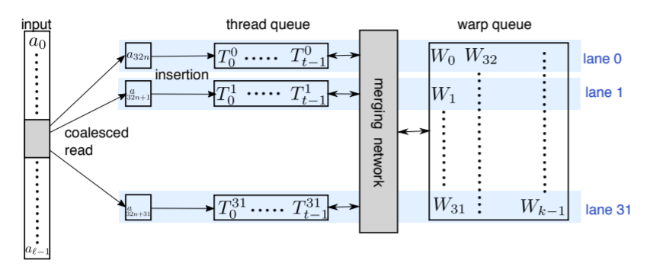

Faiss : Billion-scale similarity search with GPUs
Faiss is a library for efficient similarity search and clustering of dense vectors. It contains algorithms that search in sets of vectors of any size, up to ones that possibly do not fit in RAM. It also contains supporting code for evaluation and parameter tuning. Faiss is written in C++ with complete wrappers for Python. Some of the most useful algorithms are implemented on the GPU. It is developed by Facebook AI Research.
faiss 主要围绕索引index进行一系列相应的检索
1.索引类型
| method | class name | index_factory | parameters |
|---|---|---|---|
| exact search for L2 | IndexFlatL2 | “Flat” | d |
| exact search for inner product | IndexFlatIP | “Flat” | d |
| hierarchial navigable small world graph | IndexHNSWFlat | “HNSWx,Flat” | d,M |
| inverted file withexact post-vertification | IndexIVFFlat | “IVFx,Flat” | quantizer,d,nlists,metric |
| locality sensitive hashing | IndexLSH | - | d,nbits |
| scalar quantizer | IndexScalarQuantizer | “SQ8” | d |
| product quantizer | IndexPQ | “PQx” | d,M,nbits |
| IVF and SQ | IndexIVFSalarQuantizer | “IVFx,SQ4”,”IVFx,SQ8” | quantizer,d,nlists,qtype |
| IVFADC(coarse quantizer+PQ on residuals) | IndexIVFPQ | “IVFx,PQy” | quantizer,d,nlists,M,nbits |
| IVFADC+R(same as IVFADC with re-ranking based on codes) | IndexIVFPQR | “IVFx,PQy+z” | quantizer,d,nlists,M, nbits,M_refine,nbits_refine |
- Pre-filtering PQ codes with polysemous codes:设置一个阈值减少海明距离的对比次数.训练前定义index.do_polysemous_training = true
- 精确检索:flat,不按照顺序添加使用add_with_ids
- 内存限制
- have a lots of RAM or the dataset is small: HNSW(不支持:add_with_ids/remove/gpu)
- if somewhat: …,flat
- if quite important: PCARx,…,SQ8
- if very important: OPQx_y,…,PQx
- IVF加速,PQ减小内存占用
- special operation(都不支持gpu)
- remove_ids:删除一个IDSelector 批量IDSelectorBatch
- range_search:R邻域搜索
- write_index/read_index:将索引写入文件/读取索引文件
2.检索过程
- getting data
- building an index and adding the vectors to it
- searching
//init data
int d = 64; // dimension
int nb = 100000; // database size
int nq = 10000; // nb of queries
float *xb = new float[d * nb];
float *xq = new float[d * nq];
for(int i = 0; i < nb; i++) {
for(int j = 0; j < d; j++) xb[d * i + j] = drand48();
xb[d * i] += i / 1000.;
}
for(int i = 0; i < nq; i++) {
for(int j = 0; j < d; j++) xq[d * i + j] = drand48();
xq[d * i] += i / 1000.;
}
//build index add vectors
faiss::IndexFlatL2 index(d);// call constructor
index.add(nb, xb); // add vectors to the index
printf("ntotal = %ld\n", index.ntotal);
// search xq
long *I = new long[k * nq];
float *D = new float[k * nq];
index.search(nq, xq, k, D, I);
2.1 cpu flat search
最大堆实现
- 根据距离比较的方法L2/Inner Product 选择分支
- 初始化数据结构heaparray,堆结构保存val+id
- 数据量不多时使用sse否则用blas
- 暴力搜索,用openmp并行每个查询向量的查询过程,逐一计算查询向量和向量库中的所有距离(_mm_hadd_ps类似指令),加入最大堆
- 最终对堆内元素排序.
2.2 inverted file(IVF) search
倒排实现
- 训练: 粗糙量化
- 建立索引: 遍历所有向量,找到距离最近的聚类中心;遍历所有聚类中心建立倒排表(将可以聚类到同一中心的id push到同一倒排list)
- 检索: 先粗糙检索返回几个最近的聚类中心,获取对应的倒排索引表,遍历每个向量,和查询向量计算距离,将结果放入最大堆,最终将最大堆排序
在暴力检索基础上通过聚类将数据分片,粗糙检索使得计算代价大大减小
2.3 PQ search
乘积量化实现
思想:向量量化只是单次聚类,乘积量化将一个高维向量压缩至低维空间的笛卡尔积，再在子空间内进行量化（K-means构造码本）用一个很短的编码表示.将向量分成M段, 每一段内共有ksub个聚类中心(码本),每个聚类中心共有dsub维.
进一步优化的算法是将PQ和IVF结合,检索速度提升,存储空间缩小
2.4 GPU flat search
contributions
- a GPU k-selection algorithm, operating in fast register memory(使用shuffle指令) and flexible enough to be fusable with other kernels, for which we provide a complexity analysis.
- a near-optimal algorithmic layout for exact and approximate k-nearest neighbor search on GPU.
- a range of experiments that show that these improvements outperform previous art by a large margin on mid- to large-scale nearest-neighbor search tasks, in single or multi-GPU configurations.
fast k-selection on the GPU
基于GPU的检索算法: warpSelect
- a: 计算好的查询向量与向量库的距离,每次连续读取warp size(32)个距离
- 每一行为一个lane,lane j负责处理aj,a32+j,…, merge thread queue时使用shuffle指令,允许线程直接读取其他线程的寄存器值,只要在同一个warp中
- 将读入的距离与To比较,若大直接丢掉,否则通过插入排序进入thread queue中,队列从左到右从大到小
- 通过warp ballot指令判断To是否大于warp queue中的最大值Wk-1,只要有一个To小于Wk-1,触发sort-merge(违反不变条件2),将32个thread queue 和一个warp queue merge到一起(双调归并排序),更新两队列
- 将较小的K个元素放入warp queue,将第k+1至第k+32t+1个元素放入thread queue
- 不断读取距离值,更新thread warp queue
算法需要维持三个不变条件
- all per-lane T0 are not in the warp queue(min-k).
- all per-lane T0 are greater than all warp queue keys W.
- all ai seen so far in the min-k are contained in either some lane’s thread queue or in the warp queue.
示意图与算法流程如下图所示.

3.检索性能
数据集:sift1M
性能:
4.检索服务
根据faiss提供的一些操作索引结构的方法,完成了一个每日构建索引的检索服务
详见:Github
功能主要包括:
- 添加向量至索引结构
- 检索向量
- topK Search
- Approximate Nearest Neighbor Search
- 按日期检索
- 删除指定id向量或范围内向量
- 重新配置